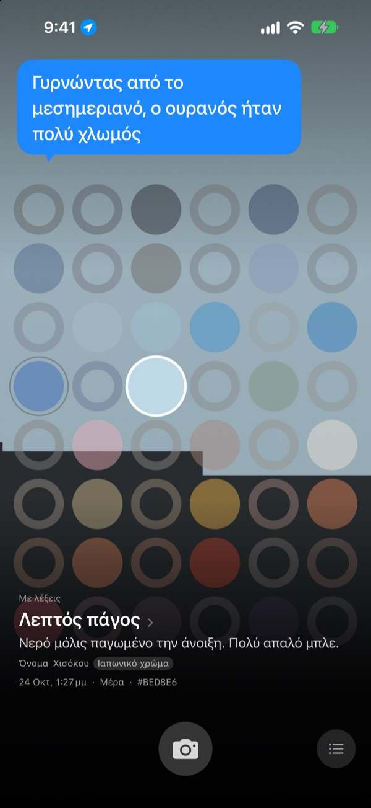
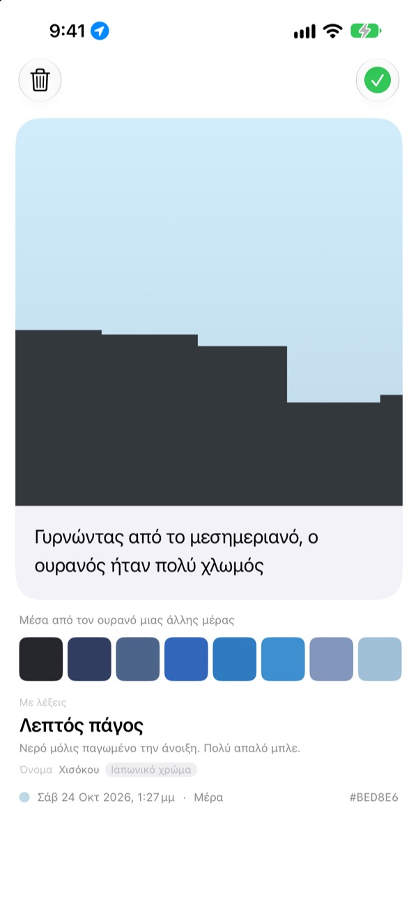
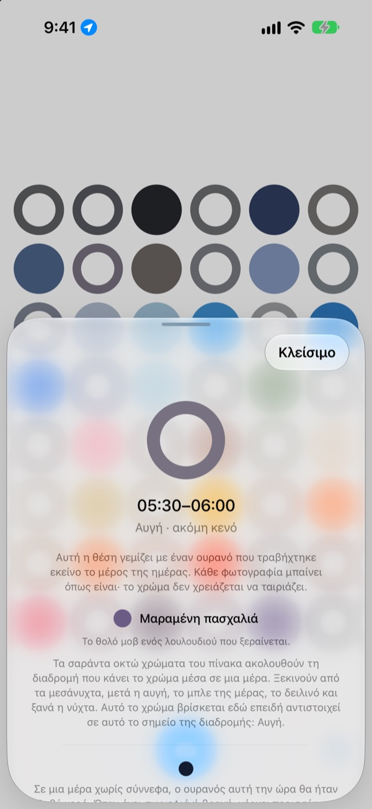
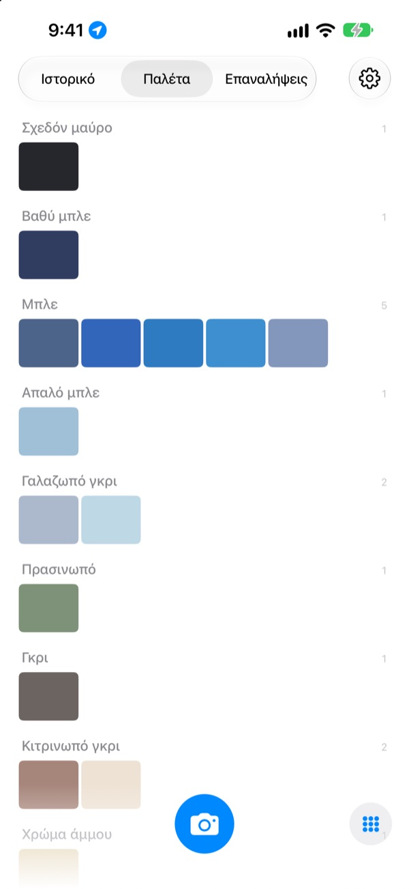

Τι χρώμα είχε
ο ουρανός σήμερα;
Φωτογραφίστε τον ουρανό και, σε έναν πίνακα με σαράντα οκτώ τετράγωνα, το τετράγωνο εκείνης της ώρας γεμίζει με το χρώμα που πιάσατε. Παίρνει κι ένα όνομα που το βλέπετε αμέσως μπροστά σας, όπως Λεπτός πάγος, Πλακάκι πισίνας ή Ώριμο λωτό.
Δωρεάν. Χωρίς λογαριασμό, χωρίς σύνδεση.

Δοκιμάστε τον πίνακα
Πατήστε ένα τετράγωνο για να δείτε σε ποια ώρα της μέρας ανήκει. Προσθέστε μια φωτογραφία του ουρανού για να γεμίσει το τετράγωνο της τωρινής ώρας, και μετά προχωρήστε τις μέρες για να δείτε πώς αλλάζει ο πίνακας.
Βλέπετε τον ουρανό κάθε μέρα, αλλά δεν θυμάστε κανένα χρώμα
Ο ουρανός στον δρόμο για τη δουλειά, ο ουρανός όταν βγήκατε μετά το φαγητό: ως το βράδυ, δεν θυμάστε τι χρώμα είχαν. Οι φωτογραφίες του ουρανού που τραβήξατε χάνονται ανάμεσα σε όλες τις άλλες. Το SkyDex τις μαζεύει ως χρώματα και απλώνει σε έναν μόνο πίνακα τη διαδρομή που έκανε ο ουρανός σήμερα.
Κάθε ουρανός παίρνει όνομα
Κάθε χρώμα παίρνει πρώτα ένα όνομα που το βλέπετε με τη φαντασία, όπως Λεπτός πάγος, Πλακάκι πισίνας ή Ώριμο λωτό. Από κάτω ακολουθεί ένα όνομα με προέλευση: ένα παραδοσιακό κορεατικό ή ιαπωνικό χρώμα, μια χρωστική ή ένα χρώμα του διαδικτύου.
Όταν η αντιστοιχία είναι κοντινή γράφει Όνομα· όταν δεν είναι, γράφει τίμια Πλησιέστερο όνομα.

Αφήστε μια γραμμή
Μόλις τραβήξετε τη φωτογραφία, ανοίγει μια κάρτα. Γράψτε τι σκεφτήκατε κοιτάζοντας ψηλά, και θα ξαναεμφανίζεται πάνω από τον ουρανό κάθε φορά που πατάτε εκείνο το τετράγωνο στον πίνακα.
Μπορείτε επίσης να απλώσετε πάνω σε αυτή τη φωτογραφία το χρώμα του ουρανού μιας άλλης μέρας και να μοιραστείτε το αποτέλεσμα ως εικόνα.

Τα άδεια τετράγωνα δείχνουν τον δρόμο
Πατήστε ένα άδειο τετράγωνο για να μάθετε σε ποια ώρα της μέρας αντιστοιχεί και ποιο χρώμα να αναζητήσετε. Σας λέει επίσης πώς είναι ο ουρανός εκείνη την ώρα μια μέρα χωρίς σύννεφα, σύμφωνα με την ανατολή και τη δύση του ήλιου εκεί που βρίσκεστε.
Το χρώμα δεν χρειάζεται να ταιριάζει. Το γκρι μιας συννεφιασμένης μέρας είναι κι αυτό το χρώμα του ουρανού εκείνης της μέρας.

Ιστορικό, παλέτα, επαναλήψεις
Δείτε τους ουρανούς σας με τη σειρά και συγκεντρώστε τα χρώματά σας σε παλέτες ανά οικογένεια, όπως Μπλε, Γκρι και Χρώμα άμμου. Φωτογραφίστε την ίδια ώρα μια άλλη μέρα, και οι δύο ουρανοί στέκονται δίπλα δίπλα.
Τα γραφικά στοιχεία της οθόνης αφετηρίας δείχνουν με μια ματιά τον σημερινό πίνακα και τον σημερινό ουρανό.

Τρία βήματα για να ξεκινήσετε
- 1
Κοιτάξτε ψηλά
Πατήστε το κουμπί της κάμερας κάτω από τον πίνακα και αφήστε τον ουρανό να γεμίσει το τετράγωνο κάδρο.
- 2
Ένα τετράγωνο γεμίζει
Το τετράγωνο της τωρινής ώρας παίρνει το χρώμα που πιάσατε, κι ένα όνομα.
- 3
Αφήστε μια γραμμή
Στην κάρτα που ανοίγει, γράψτε τι σκεφτήκατε βλέποντας εκείνον τον ουρανό.
Πώς μοιράζει ο πίνακας τη μέρα
- Μεσάνυχτα · 00:00–05:00
- έξι τετράγωνα
- Αυγή · 05:00–08:00
- έξι τετράγωνα
- Μέρα · 08:00–16:00
- δώδεκα τετράγωνα
- Αργά το απόγευμα · 16:00–18:00
- έξι τετράγωνα
- Δειλινό · 18:00–21:00
- δώδεκα τετράγωνα, ένα κάθε 15 λεπτά
- Νύχτα · 21:00–24:00
- έξι τετράγωνα
Γύρω στο δειλινό, όταν ο ουρανός αλλάζει γρήγορα, τα τετράγωνα είναι πυκνά· στα βαθιά της νύχτας, όταν μένει για ώρες ίδιος, είναι αραιά. Πάνω πάνω βρίσκονται τα μεσάνυχτα, και προς τα κάτω κυλά η μέρα.
Συχνές ερωτήσεις
Πώς γεμίζει ένα τετράγωνο;
Ένας ουρανός που φωτογραφίζετε σήμερα γεμίζει το τετράγωνο της ώρας λήψης, ακόμη κι αν το χρώμα βγει διαφορετικό από ό,τι περιμένατε. Έτσι ήταν πράγματι ο ουρανός εκείνη την ώρα. Οι ουρανοί προηγούμενων ημερών μπαίνουν με βάση το χρώμα: αν κάποιος είναι αρκετά κοντά στο χρώμα ενός τετραγώνου, το γεμίζει, και κάθε ουρανός γεμίζει μόνο ένα τετράγωνο.
Ένα τετράγωνο που χθες ήταν γεμάτο σήμερα είναι άδειο.
Ο πίνακας είναι πάντα το σήμερα. Ένα τετράγωνο που το γέμισε ένας χθεσινός ουρανός λόγω ώρας, με την αλλαγή της μέρας αντιστοιχίζεται ξανά μόνο με βάση το χρώμα. Γι' αυτό κάποιες μέρες ο πίνακας είναι σχεδόν γεμάτος και κάποιες φαίνεται άδειος. Οι φωτογραφίες σας δεν χάθηκαν: όλοι οι ουρανοί είναι στο Ιστορικό, και με σειρά χρώματος στην Παλέτα.
Τα γεμάτα τετράγωνα ξεθωριάζουν.
Είναι σκόπιμο. Μια φωτογραφία κρατά το αληθινό της χρώμα για μία εβδομάδα και μετά ξεθωριάζει αργά μέσα στις επόμενες οκτώ εβδομάδες. Δεν διαγράφεται και δεν σβήνει ποτέ εντελώς. Φωτογραφίστε ξανά τον ουρανό εκείνη την ώρα και το τετράγωνο ξαναπαίρνει αμέσως όλο του το χρώμα. Δεν υπάρχει σερί που μπορεί να σπάσει ούτε πόντοι να ξανακερδίσετε.
Πρέπει να ταιριάζει το χρώμα;
Όχι. Δεν υπάρχει επιτυχία ή αποτυχία. Κάθε φωτογραφία αποθηκεύεται, και το γκρι μιας συννεφιασμένης μέρας είναι κι αυτό το χρώμα του ουρανού εκείνης της μέρας.
Γιατί ζητά την τοποθεσία μου;
Μόνο για να σας δείξει, όταν πατάτε ένα άδειο τετράγωνο, το χρώμα ενός ανέφελου ουρανού εκείνη την ώρα, σύμφωνα με την ανατολή και τη δύση του ήλιου εκεί που βρίσκεστε. Χρησιμοποιεί μόνο μια κατά προσέγγιση τοποθεσία, με ακρίβεια χιλιομέτρου, και οι συντεταγμένες δεν επισυνάπτονται ποτέ στις φωτογραφίες. Αν αρνηθείτε, όλα λειτουργούν κανονικά, με τη Σεούλ ως σημείο αναφοράς.
Μπορώ να προσθέσω έναν ουρανό από τη βιβλιοθήκη μου;
Ναι. Ένας ουρανός που επιλέγετε από τις Φωτογραφίες αντί για την κάμερα κόβεται κι αυτός σε τετράγωνο και γεμίζει το τετράγωνο της τωρινής ώρας, όπως ένας που μόλις τραβήξατε.
Πώς διαγράφω μια φωτογραφία;
Ανοίξτε τη φωτογραφία και πατήστε Διαγραφή, ή σύρετέ την προς τα αριστερά στο Ιστορικό. Διαγράφεται ταυτόχρονα από τη συσκευή και από το iCloud. Αν διαγράψετε την εφαρμογή, το αντίγραφο στο iCloud μένει, οπότε οι ουρανοί σας επιστρέφουν όταν την εγκαταστήσετε ξανά.
Τι γίνεται αν αλλάξω συσκευή;
Οι ουρανοί σας φυλάσσονται στο δικό σας iCloud και σας ακολουθούν σε μια νέα συσκευή με τον ίδιο λογαριασμό Apple. Δεν υπάρχει λογαριασμός ούτε διακομιστής, και οι φωτογραφίες και τα χρώματά σας δεν στέλνονται ποτέ στον προγραμματιστή. Χωρίς διαφημίσεις, χωρίς παρακολούθηση.
Είναι πραγματικά δωρεάν;
Ναι, όλες οι λειτουργίες είναι δωρεάν. Αν σας αρέσει, μπορείτε να αφήσετε ένα φιλοδώρημα στον προγραμματιστή μέσα από την εφαρμογή, αλλά το φιλοδώρημα δεν ξεκλειδώνει τίποτα.
Σε ποιες συσκευές λειτουργεί;
Σε iPhone με iOS 17.0 ή νεότερο, μόνο σε κατακόρυφο προσανατολισμό.
Σφάλματα, περίεργη συμπεριφορά ή ό,τι άλλο θέλετε να πείτε: γράψτε στο leeo@kakao.com. Αν αναφέρετε τι κάνατε εκείνη τη στιγμή και ποια έκδοση iOS έχετε, το πρόβλημα βρίσκεται πολύ πιο εύκολα.